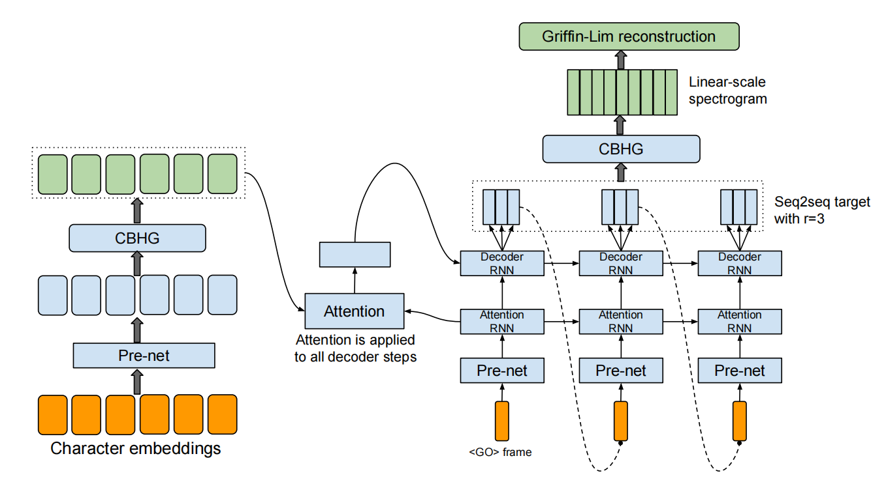
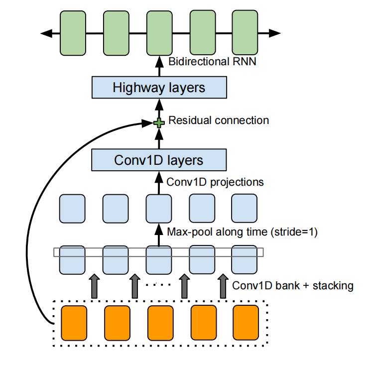
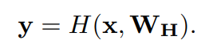
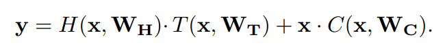
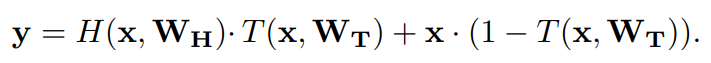
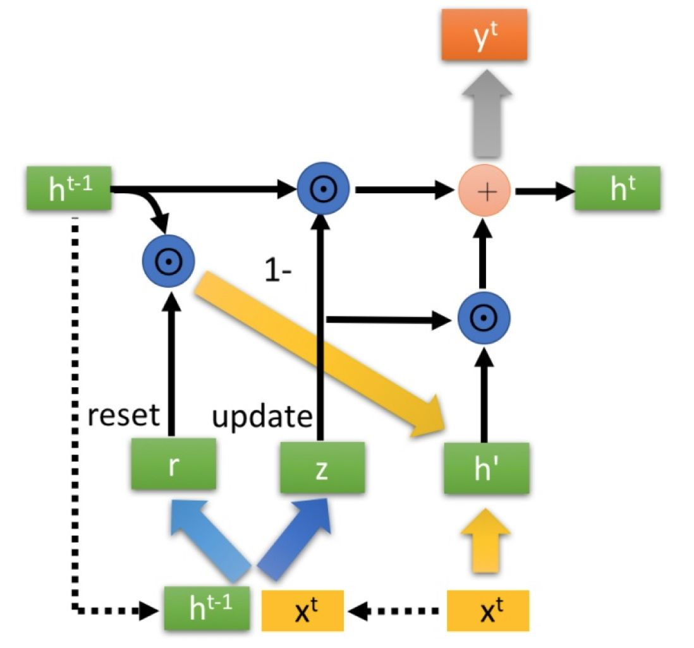
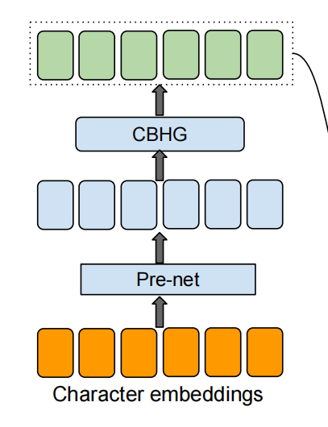
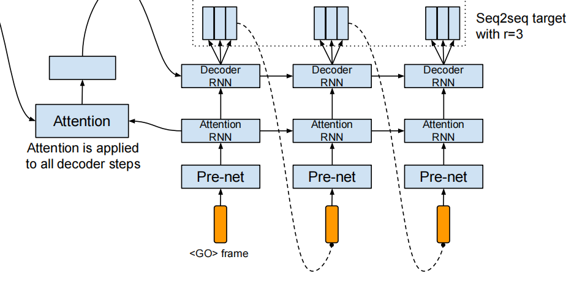
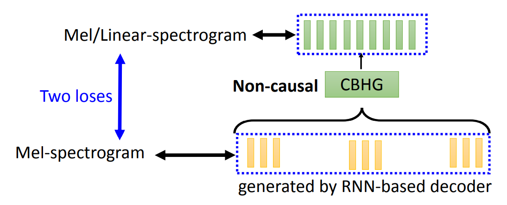
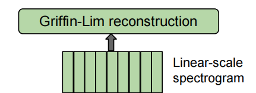

In this paper, we present Tacotron, an end-to-end generative text-to-speech model that synthesizes speech directly from characters.
语音合成系统通常由多个阶段构成，例如文本分析前端（text analysis frontend）、声学模型（acoustic model）和音频合成模块（audio synthesis module）。构建这些模块通常需要其他领域的专业知识。
Tacotron则是需要text-audio pair就可以从零开始训练且不需要phoneme-level的对齐。另外，Tacotron是frame-level的自回归（autoregressive）模型，要比诸如WaveNet的sample-level的自回归模型要快很多。
模型的主干是带注意力机制（attention mechanism）的seq2seq模型。它主要由以下几个模块构成：
模型直接吃character作为输入并产生spectrogram frame，然后通过vocoder转成waveform。

CBHG包括：
其作用是从序列（sequence）中抽取representation。输入序列首先透过一些列具有不同filter width的1-D convolution bank。这些卷积能够提取局部（local）和上下文（contextual）信息。各个卷积的输出结构叠在一起的序列之间按照时间方向做max-pooling，即让相邻的向量比较像一点（increase local invariances）。接着再透过一层filter width固定的1-D convolution，并将得到的输出与最开始的输入序列做残差连接（residual connection）。再将结果依次通过highway network和bidirectional GRU。

一般的前馈神经网络（feedforward neural network）会包括许多层，它能对输入

但随着网络深度的增加，梯度消失问题就出现了。Highway network旨在解决该问题。
在highway network中，我们会加入两个非线性变换

简单起见，可以让

可以看出，highway network的输出一部分是透过一般的前馈网络得到，另一部分是直接取自输入。
GRU即gated recurrent unit，是RNN的一种。它的作用与LSTM一样，但计算量更小。具体讲解参见人人都能看懂的GRU - 知乎 (zhihu.com)。

输入的character表示为one-hot vector，然后透过embedding变为连续的向量。接着将得到的向量序列依次透过pre-net（一些带有drop-out的非线性变换）和CBHG，得到最终的representation。

Decoder中用到attention RNN和decoder RNN。首先一个zero vector（表示起始）依次透过pre-net和attention RNN得到query。然后将query和encoder的输出序列做attention并得到content vector。该content vector和query叠一起送给decoder RNN来生成spectrogram frame。

Tacotron中设计了一次decode输出r个mel-spectrogram frames。这是考虑到一个character对应的语音可能有好几帧，把它们一起输出可以有效减少计算量。另外，论文中是将r个frames中的最后一个frame作为下一个时间步的输入，当然也可以用所有frames。
训练时还会用到teacher forcing的技巧，即把ground truth对应的第r帧作为decoder的输入。为了让模型更加robust，pre-net中加入了drop-out。值得注意的是，在推理的时候，也要给pre-net开drop-out。
Decoder得到的mel-spectrogram并没有直接送到vocoder，而是先经过一层CBHG（也可以是其他网络）得到mel-spectrogram或linear spectrogram。这是考虑到在decode时，模型只能按照时间顺序（forward）来decode。但有可能模型看到之后的输入后想要对之前的输出做修正。即加一层post-processing net相当于让模型可以根据forward和backward的信息来调整输出。
Tacotron中为此设置了两个loss，即decoder输出梅尔普的loss和透过post-processing net生成梅尔/线性普的loss。

声码器使用Griffin Lim算法，具体参见Griffin-Lim 声码器介绍 - 知乎 (zhihu.com)。

[DLHLP 2020] Speech Synthesis (1/2) - Tacotron - YouTube